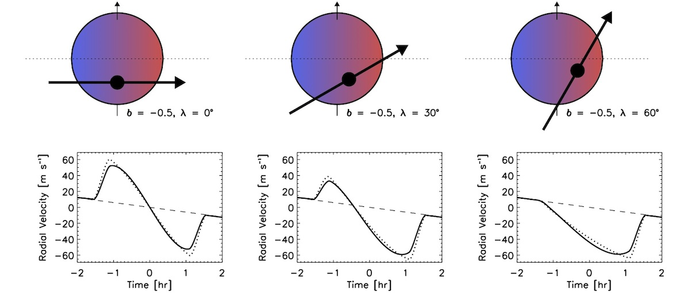

Stellar obliquities in exoplanet systems#
Learning Objectives
Organize and cross-match information across astronomical datasets
Categorize exoplanet systems based on physical properties
Reproduce known trends in the stellar obliquity distribution
Derive empirical boundaries between classes of exoplanets
Introduction#
The stellar obliquity of a planetary system is defined as the tilt of the net orbital angular momentum vector of the planets’ orbits relative to the spin axis of the host star. For exoplanets, this is typically approximated by the angle between a planet’s orbital orientation and the stellar spin: an angle that can be measured for transiting exoplanets by obtaining radial velocity observations across the planet’s transit.
These observations trace the Rossiter-McLaughlin effect as the planet transits across the red- or blue-shifted component of the spinning host star, blocking out preferentially bluer or redder light to induce small deviations in the measured radial velocity. A schematic of this effect, drawn from Gaudi et al. 2010 and adapted by the WASP planets team, is shown below.

Downloading and examining the data#
To begin examining our stellar obliquities, we will first need to obtain the appropriate datasets. We will begin from two complementary sources: (1) the NASA Exoplanet Archive, which catalogues a broad range of exoplanet system properties, and (2) the TEPCat catalogue, which includes a table tracking all stellar obliquity measurements from the community.
Exercise 1
Download the Planetary Systems Composite Parameters dataset from the NASA Exoplanet Archive.
Navigate to the TEPcat catalogue and download the .csv file available for orbital obliquities.
Open each file as a pandas dataframe and print the columns. What information is provided in each? How do the naming conventions differ?
Hint
Hint 1: You can use astroquery to directly download data from the NASA Exoplanet Archive in Python. The appropriate package can be downloaded as follows:
# You can include some starter code in this format
from astroquery.ipac.nexsci.nasa_exoplanet_archive import NasaExoplanetArchive
Hint
Hint 2: Some datasets are most easily opened as astropy tables and then converted to pandas after the fact.
Cross-matching catalogues#
You’ll notice that the planets are not listed with the same naming conventions: in the TEPCat catalogue, underscores are used in the planet/star names (a mix is included), while the NASA Exoplanet Archive uses spaces and separately lists planets and stars. The TEPCat catalogue also lists all measurements obtained, meaning that there are multiple entires for each object.
We’d like to ultimately produce just one table that can be drawn from with all of the relevant information about a system, so that we can visualize information to contextualize each system. This exercise is designed to step us through that process.
Exercise 2
Filter the TEPCat catalogue to include only systems where Pflag=’y’. This is the ‘preferred’ flag in TEPcat and should leave you with just one measurement per planet. Verify that this is the case by checking whether the number of remaining rows matches the unique set of system names present in TEPCat. If these do not match, then update your filtered list so that all systems with reliable measurements are included.
Use the regex module in Python to convert all system names in TEPCat to match the convention of planet names in the NASA Exoplanet Archive.
Merge the two files based on the updated names. Demonstrate that you end up with the same number of rows present at the end of Step 1 of this exercise (that is, all planets with measurements in TEPCat should also be present in the NASA Exoplanet Archive).
Hint
Hint 1: You may need to revisit some papers to judge whether a system is considered to have a “reliable” measurement.
Hint
Hint 2: When a letter is not provided for a planet in TEPCat, the measurement is for the ‘b’ planet.
Reproduce a classic stellar obliquity figure#
You should now have all of the columns needed to make basic diagnostic figures related to the stellar obliquity distribution. One well-known trend in the stellar obliquity distribution is that hot Jupiters around hot stars are often spin-orbit misaligned (\(\lambda>>0\) deg), while hot Jupiters around cooler stars are typically spin-orbit aligned (\(\lambda\approx0\) deg; Winn et al. 2010, Schlaufman 2010). In the next exercise, we will show that this is the case. Note that, to derive physical meaning from spin-orbit distributions, we are typically most interested in the deviation of \(\lambda\) from zero degrees (alignment), so that we will focus on \(|\lambda|\).
Exercise 3
Plot the stellar effective temperature vs. the absolute value of the spin-orbit angle (\(|\lambda|\)) for all hot Jupiters within your sample. Use stellar effective temperatures from the NASA Exoplanet Archive, and include asymmetric uncertainties on the y-axis. Define hot Jupiters here as planets with \(0.3M_J \leq M \leq 13 M_J\) and \(a/R_*<10\).
Describe the observed distribution. At roughly what stellar effective temperature do you begin to see a higher rate of spin-orbit misaligned hot Jupiters?
Hint
Hint 1: To filter ‘hot Jupiters’, you will need to calculate \(a/R_*\) from other values provided by the NASA Exoplanet Archive. In some cases, it may be necessary to convert from orbital period to semimajor axis using Kepler’s laws. We use \(a/R_*\) rather than orbital period to define our hot Jupiters, since star-planet interactions may play an important role in shaping the stellar obliquity distribution.
Hint
Hint 2: Uncertainties will need to be flipped for negative values of \(\lambda\) when taking the absolute value.
Hint
Hint 3: You may have many overlapping data points in your figure. To see the distribution more clearly, it can be helpful to include some opacity value smaller than 1 for the visualized data points.
Checking robustness of a trend to catalogue inhomogeneities#
Oftentimes, we will find that multiple values are reported for a certain parameter when describing a given system. Ideally, your results should not depend on which of these values are chosen, unless there is good reason to believe that one parameter set is more reliable than others. For example, a given study may uniformly derive parameters across a sample — offering a more apples-to-apples comparison than heterogeneous measurements drawn from compiled catalogues. Alternatively, a measurement may have been made with a methodology that is more precise and prone to fewer systematic biases than others, such that it may be considered more ‘reliable’.
Because we are working with compiled catalogues that are not homogenous, we should verify that the observed trend is present irrespective of what value we choose for the stellar effective temperature.
Exercise 4
Create a two-panel figure in which the top panel is the same as your figure from Exercise 3, and the lower panel is the same figure but with stellar effective temperature drawn from the TEPCat reported values.
Repeat the exercise of checking at which temperature you begin to see a higher rate of spin-orbit misaligned hot Jupiters. Is this value roughly constant across both panels?
Considering different exoplanet populations#
While, historically, spin-orbit measurements have been primarily confined to hot Jupiter systems, increasingly they have been obtained for warm Jupiters as well as lower-mass/smaller exoplanets. While these populations are smaller, they so far have not been observed to follow the same trends observed for hot Jupiters. Here we will visualize what those other distributions look like.
Exercise 5
Create a three-panel figure in which the top panel is the same as your figure from Exercise 3, the middle panel is the same but with warm Jupiters (\(0.3M_J \leq M \leq 13 M_J\) and \(a/R_*>10\)), and the bottom panel shows the spin-orbit distribution for all lower-mass planets (\(M<0.3M_J\)). Describe similarities and differences between each population.
Remove binaries#
When a binary companion is present, a quite broad range of physical mechanisms — for example, von Zeipel-Lidov-Kozai oscillations induced by the binary perturber; disk nodal precession; and secular resonance crosings — can produce spin-orbit misalignments, whereas the set of misalignment mechanisms is substantially more limited in single-star systems. As a result, considering only single-star systems can help to gain physical intuition into what the primary mechanisms are that sculpt at least some sub-populations of the stellar obliquity distribution.
The NASA Exoplanet Archive includes a column, ‘sy_snum’, that lists whether a system has a known binary star companion. While this is not necessarily complete (some binary companions can be quite faint and tricky to find), we can remove at least the listed binaries to show how the sample changes. Note that there are other places to vet for binaries — for example, using the Gaia astrometric catalogue — but, for simplicity, we will consider only the NASA Exoplanet Archive here.
Exercise 6
Remove all listed binary or multi-star systems (those with sy_snum>1) listed in the NASA Exoplanet and describe how the trends change.
Shift the limits of where you place the borders of each planetary population. What empirical limits most naturally divide the planets into distinct groups?
Understanding emerging trends#
A second observed trend that has recently emerged is that warm Jupiters in single-star systems are preferentially spin-orbit aligned (Rice et al. 2022; Wang et al. 2024). As such, another useful figure to show is how stellar obliquity varies with star-planet separation. We can use this to empirically define what is considered a “warm Jupiter”.
Exercise 7
Re-make the same 3-panel figure as in Exercise 6, but with the orbital separation (\(a/R_*\)) on the x-axis, rather than the stellar effective temperature. At what cutoff of \(a/R_*\) do planets stop showing a high rate of spin-orbit misalignment?